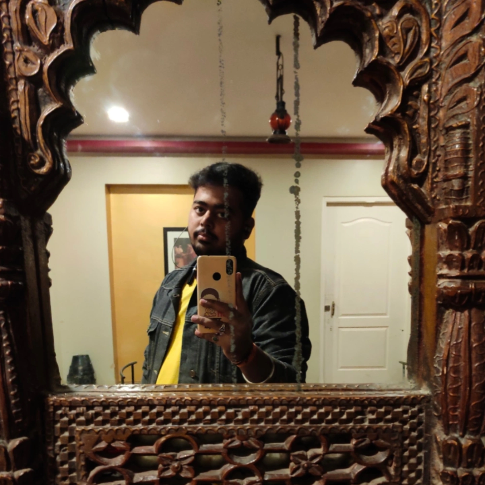
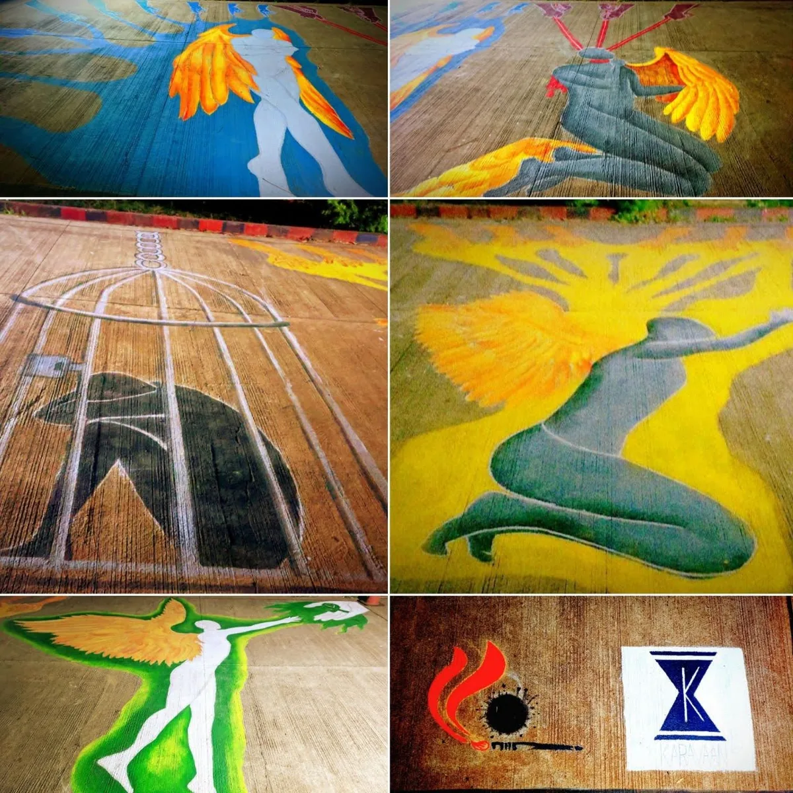
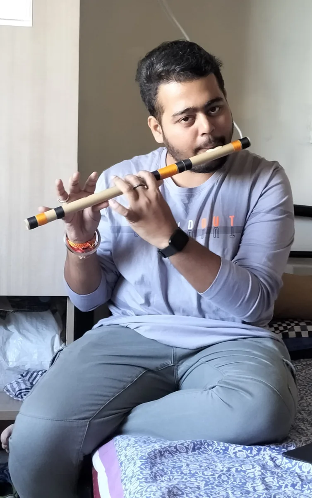
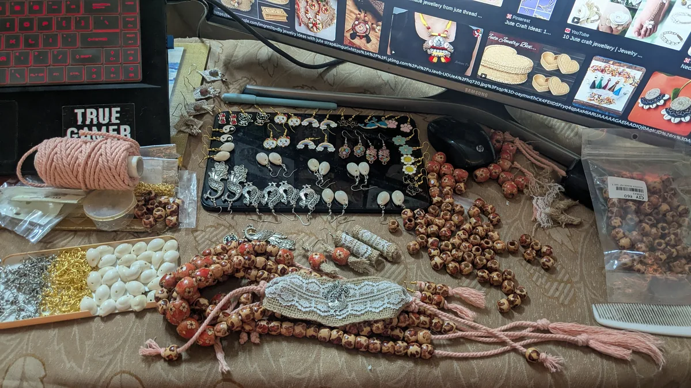
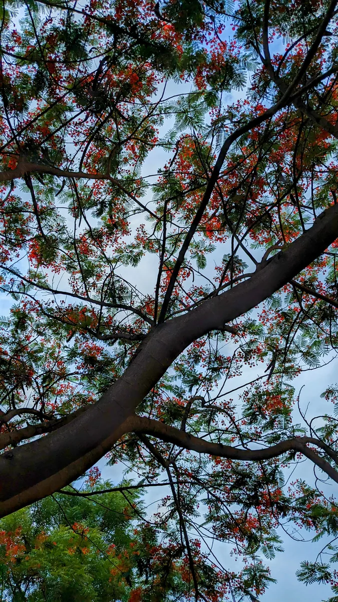
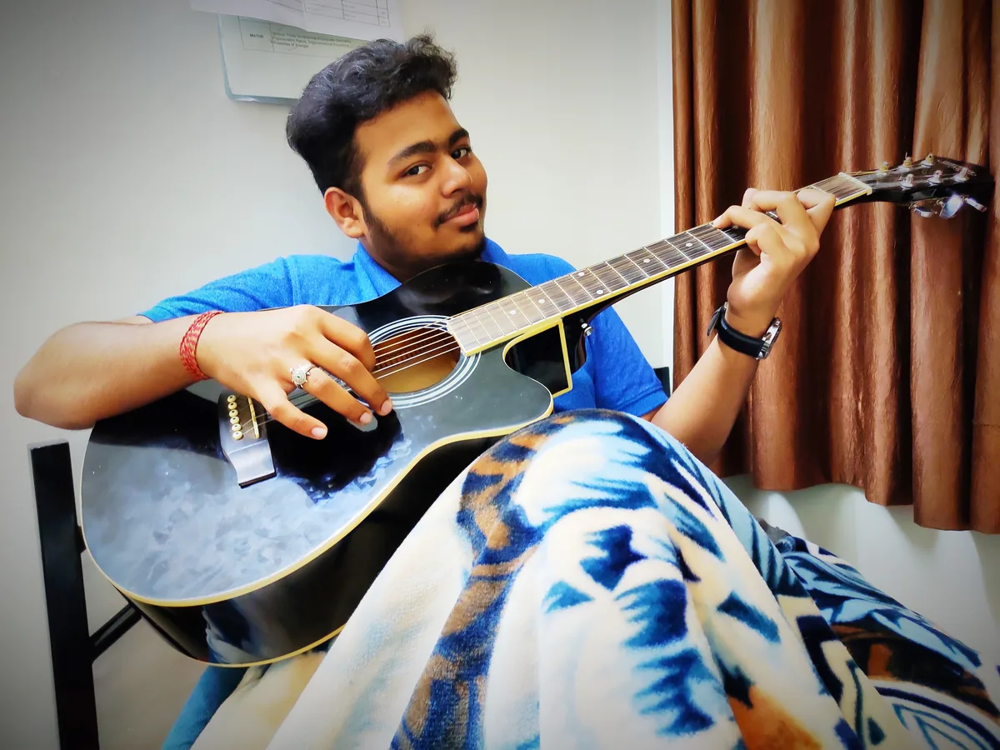

Music, Design & Community
Beyond the Lab
A researcher is more than their dataset, and an engineer is more than their codebase. My life moves in dialogue between analytical rigor in science and the discipline of music, visual art, and craftsmanship.
The Musical Journey
Music is my primary language outside code and structures. Playing Flute, Guitar, and Keyboard builds the exact blend of pattern memory and patience that computational research demands.
From improvising classical ragas on bansuri flute to building chord progressions on keyboard, music serves as the creative reset behind deep analytical work.
“Where words fail, music speaks.”
Flute · Guitar · Keyboard
Digital Art & Visual Design
Visual design and digital art directly inform my scientific software work — from framing 3D protein geometry in MolBridge to shaping clean research user interfaces and festival brand systems.
At IISER Pune, I coordinated the Science & Art Club and mentored campus design leads across large-scale exhibitions and events.
“Design is intelligence made visible.”
Illustration · Photography · Handcraft
Moments & Memories
Glimpses of campus arts, music, and photography beyond the terminal






“The most beautiful thing we can experience is the mysterious. It is the source of all true art and all science.”
— Albert Einstein